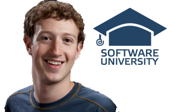
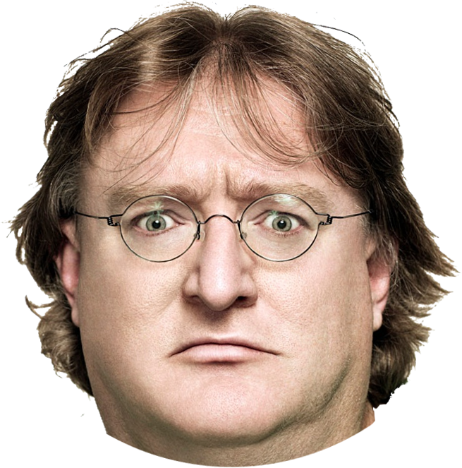
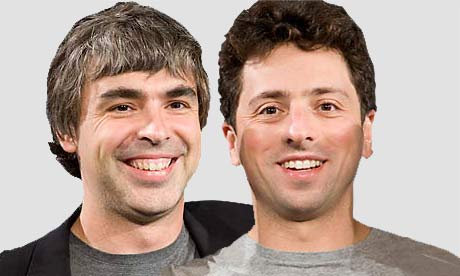

Бил Гейтс

Бил Гейтс си е играл с Наков в детската градина. Той толкова се е впечатлил от неговия интелект, че избягва, не завършва обучението си и създава най-популярната операционна система, само за да докаже че и той става за нещо.
Стив Джобс

Стив Джобс е бил учител в детската градина на Наков. Когато Наков надминава учителя си, Джобс напуска за да създаде Епъл, но в крайна сметка не остава програмист, а просто търговец и CEO.
Марк Зъкърбърг

Марк Зъкърбърг е учил в СофтУни. "Един от НЕ - топ студентите ми!" - както го определя Наков. Обиден Марк се депресира и напуска. В търсене на нови приятели, с които да сподели мъката си той създава фейсбук.
Гейб Нюел

Не може да се твърди че Гейб е учил в СофтУни. Той прекарва изцяло времето си в кафето на университета играейки непрекъснато на конзола. Когато Наков отива при него и му казва, че това е несериозно, Гейб си тръгва. В крайна сметка той основава Valve, междувременно ставайки милиардер, за да може пак да си играе по цял ден, но и да му плащат за това!
Сергей Брин и Лари Пейдж

Сергей и Лари са конкуренти на Наков, още от детската градина. И те също искат да създадат обучение по програмиране. Неспособни да се сравняват с Наков и неговата система, те основават обикновена търсачка в интернет.